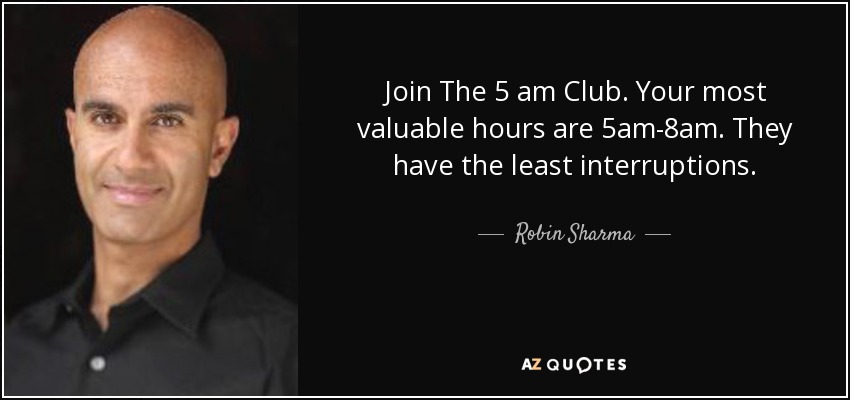

User group for early risers
0500
Wake up before the world does.
Tomorrow's edge is built before sunrise. No app. No fee. Just discipline.
Manifesto
"We don't wake up at 5 a.m. because we have a lot of work to do, or to brag about how hard-working we are. It's about giving your maximum for your business to be successful — and if that means waking up at an unusual hour for most, you'll likely start liking the sunrise."
Why 5 a.m.
Seven reasons to claim the morning.
-
Head start
When 99% of people are still sleeping you begin the day with an edge. Willpower peaks. Laziness ceases to exist.
-
Start prepared
If you don't have a morning ritual, build one — fast. Treat every day of your life as a unique event. Start ready.
-
Higher productivity
No rush, planning done — you can afford to start with the most important tasks, not the urgent ones.
-
Silence as a resource
The morning is the perfect environment for focused work. Not just the silence around you — the silence inside.
-
Happier mind
How you start your day shapes the rest of it. A study published at NCBI showed nocturnal people are 3× more prone to depression than morning people.
-
Healthier body
Sleep early, wake early, and your body syncs with the circadian cycle — the 24h biological rhythm of living beings.
-
Mastery
Self-control, refinement, discipline. You start acting like a professional, not an amateur. The art of living every day at its maximum.
Watch
5 tips on how to wake up early.
Robin Sharma shares the essential keys to make early mornings stick.

How to join
You don't need permission. Just start.
Change yourself first — then change the others.